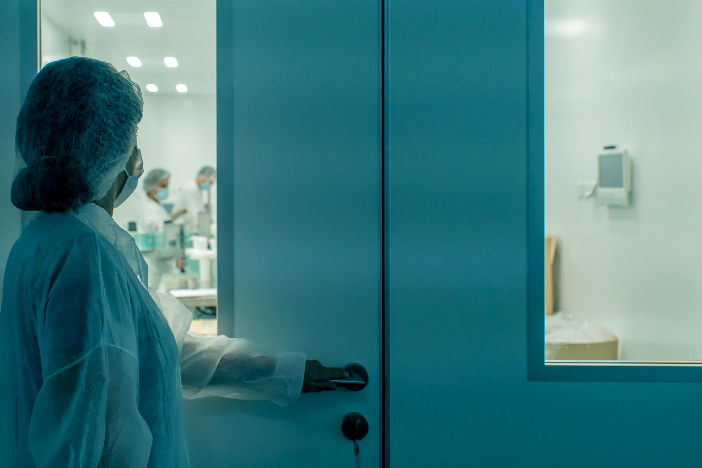

About KEEP
为关键洁净工作而建。
KEEP 将擦拭产品视为关键流程的一部分。我们用稳定材料、场景配方和可追溯供应，把日常清洁动作变成可靠的标准动作。
我们的逻辑
不从单品开始，而从使用现场开始。
医疗环境关注感染风险和接触面兼容，个人护理关注肤感和安全边界，工业场景关注强度、吸附和耐溶剂能力。KEEP 以这三类需求为产品架构的起点。
我们的工作方式很直接：确认污染物、接触面、使用频次、包装节奏和合规要求，再反推基材、配方、尺寸和交付方式。

我们坚持什么
克制、清晰、可持续复制。
KEEP 的视觉语言和产品语言保持一致：少做装饰，多做控制。我们更关心一片擦拭材料是否在真实现场里稳定工作，而不是只在货架上显眼。
公司价值
把洁净交付给每一个需要确定性的环境。
01
以接触场景定义产品，不让客户在复杂 SKU 中反复试错。
02
围绕配方、材料、包装和批次建立可复用的质量体系。
03
支持 OEM、定制规格和跨区域交付，让合作更直接。